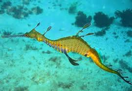

là một loài cá sinh trưởng ở vùng biển Úc, trông giống như cá ngựa và cũng là một họ gần của loài cá ngựa. Điều đặc biệt của loài sinh vật biển này là con đực sẽ chịu trách nhiệm ấp trứng để nở ra con non.
Có thể bạn đã biết rằng cách sinh sản của cá ngựa rất đặc biệt. Sau khi giao phối cùng con đực, cá ngựa cái sẽ đẻ trứng vào túi đựng trứng trong bụng con đực, sau một khoảng thời gian “thai kỳ”, cá ngựa đực sẽ ấp nở ra cá ngựa con.